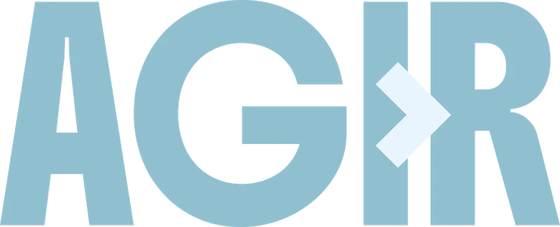
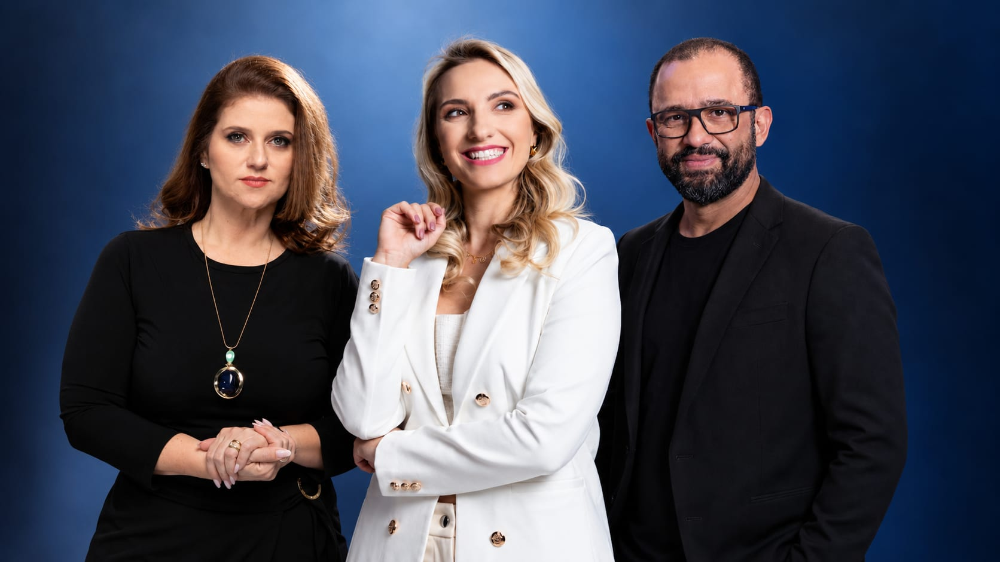
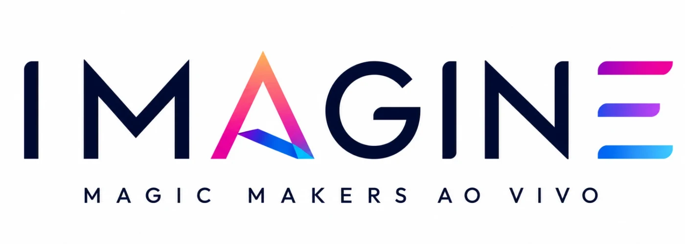
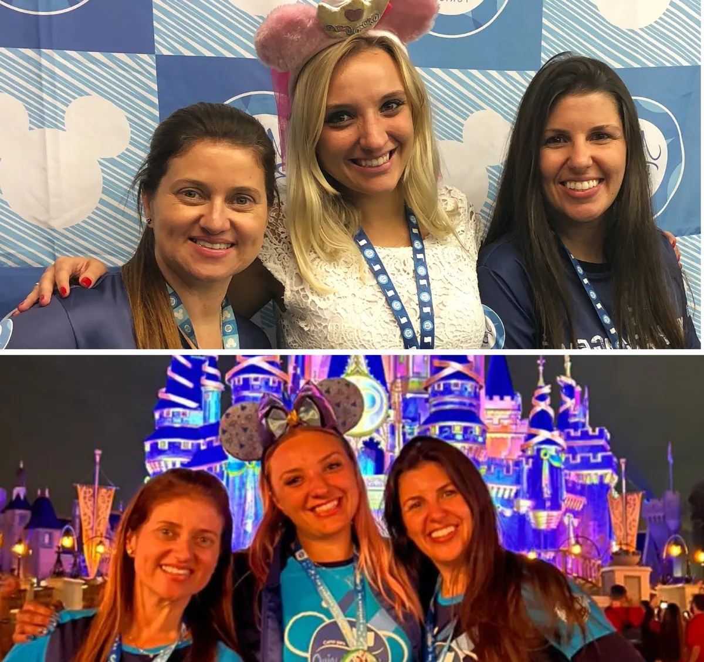

EM DESTAQUE
Protagonista AGIR
FORMAÇÃO
Ajude a transformar experiência em implementação.
CONHECER OPORTUNIDADE →
PROGRAMA PROTAGONISTAS · ACADEMIA DA MAGIA
O Protagonistas abre espaço para que alunos da Academia da Magia transformem suas histórias, conhecimentos e experiências em novas formas de contribuir, inspirar e ocupar o palco da nossa comunidade.
SUA JORNADA. SUA VOZ. SEU ESPAÇO.
Talvez seja uma experiência.
Um conhecimento.
Uma transformação.
Uma habilidade.
Uma forma diferente de enxergar o turismo.
E talvez exista um espaço dentro da Academia onde tudo isso possa ganhar voz.
O QUE É SER PROTAGONISTA?
É ter construído uma trajetória que pode contribuir, inspirar, ensinar, conectar ou ajudar a construir algo junto com a Academia.
É quando aquilo que você aprendeu, viveu, aplicou e conquistou pode abrir possibilidades não apenas para você, mas também para outras pessoas.
Por isso, não existe apenas uma maneira de protagonizar.
Um Protagonista pode…
Protagonismo não é sobre aparecer mais. É sobre ter algo para contribuir.
PROTAGONISTA EM AÇÃO · ORLANDO
De aluna a parte ativa de uma experiência da Academia.
A Pri entrou na Academia procurando um caminho para transformar uma paixão em profissão. Vieram formações, experiências, prática e novos caminhos profissionais.
Agora, em Orlando, ela vive um novo capítulo. Como primeira Protagonista deste novo formato, Pri acompanha uma experiência prática da Academia por dentro, conversa com os participantes, registra experiências, mostra bastidores e ajuda outras pessoas a enxergarem novas possibilidades.
“Eu entrei procurando um caminho para viver essa paixão. A cada etapa, fui descobrindo que existiam mais possibilidades do que eu imaginava.”
Cada pessoa pode contribuir de uma maneira diferente.
Transforma conhecimento e experiência em aprendizado para outros profissionais.
Leva a comunidade para dentro de destinos, experiências e acontecimentos.
Escuta, conecta e ajuda uma comunidade a acontecer.
Transforma experiências e aprendizados em conteúdo.
Participa da construção de projetos, eventos e experiências da Academia.
Conduz conversas, entrevistas, conteúdos e encontros.
Ajuda a aproximar metodologia, experiência real e aplicação.
Essas são algumas possibilidades. Não são limites.
À medida que a Academia cresce, novas formas de protagonizar também podem surgir.
CONHEÇA NOSSOS PROTAGONISTAS
Histórias diferentes. Conhecimentos diferentes. Um ponto em comum: cada uma encontrou uma forma de contribuir.
Orlando · Experiência prática · Conteúdo e cobertura
Primeira Protagonista do novo formato: acompanha por dentro uma experiência prática da Academia em Orlando.
CONHECER A HISTÓRIA →
Guiamento Virtual · Rota Califórnia
Transforma a experiência com guiamento e roteiros em aprendizado para outros profissionais.
CONHECER A HISTÓRIA →Paris além da Disney
Compartilha com a comunidade o conhecimento de quem vive Paris muito além dos parques.
CONHECER A HISTÓRIA →Moneys
Transforma conhecimento e experiência em aprendizado para outros profissionais do turismo.
CONHECER A HISTÓRIA →COMO FUNCIONA
Você não precisa criar um projeto para tentar convencer a Academia.
Nós criamos oportunidades. Você nos mostra por que aquela pode ser a sua.
Uma turma, projeto, evento, destino, conteúdo ou necessidade real.
Você conhece a missão, os pré-requisitos, o perfil procurado e o que aquela experiência envolve.
Conta sua trajetória e apresenta experiências, resultados ou conhecimentos relevantes para aquela oportunidade.
Analisamos as candidaturas considerando os critérios e necessidades daquela missão.
E passa a construir aquele capítulo junto com a Academia.
Não existe uma quantidade obrigatória de cursos.
Não existe um único caminho.
Não existe uma pontuação que automaticamente transforma alguém em Protagonista.
Algumas oportunidades podem exigir uma formação específica. Outras podem procurar determinada experiência, conhecimento, resultado, habilidade ou disponibilidade.
Os critérios estarão sempre descritos em cada oportunidade.
MURAL DE OPORTUNIDADES

EM DESTAQUE
FORMAÇÃO
Ajude a transformar experiência em implementação.
CONHECER OPORTUNIDADE →
MAIS RECENTE
EVENTOS · EXPERIÊNCIAS
Já imaginou ajudar a construir por dentro uma das maiores experiências da Academia?
CONHECER OPORTUNIDADE →CANDIDATURA ENCERRANDO
COMUNIDADE
Ajude a gente a ouvir melhor a nossa própria comunidade.
CONHECER OPORTUNIDADE →Cada oportunidade possui suas próprias características e contrapartidas.
Dependendo da missão, um Protagonista poderá ter acesso a experiências, eventos, cursos, projetos, bastidores, mentorias, destinos, conteúdos ou outros espaços da Academia.
Não é um prêmio por aquilo que você comprou. É uma oportunidade construída a partir daquilo que você se tornou.

NOSSA CULTURA
A Camila Moretti entrou na Academia como aluna. Ao longo da sua trajetória, passou por diferentes espaços até se tornar parte ativa do negócio — e hoje é sócia da Academia.
As pessoas que entram na nossa comunidade podem ter muito mais para construir com ela do que imaginavam quando chegaram.
E talvez, em algum momento, descubra que também existe um palco esperando pelo que você tem para compartilhar.
Você não precisa saber agora qual será.
Continue aprendendo. Continue aplicando. Continue construindo sua história.
Quando a oportunidade certa aparecer, esteja pronto para ocupá-la.
A Academia fez parte da sua história.
Agora, sua história pode fazer parte da Academia.